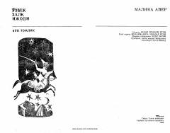

MAO'zbek xalq og'zaki ijodiga mansub qadimiy va mashhur doston.
Mazkur doston o'zbek xalq og'zaki ijodining yirik namunalaridan biri bo'lib, xalq baxshilari tomonidan kuylab kelingan. Kitobda doston qahramonlarining sarguzashtlari va epik voqealar bayon etilgan. Asar o'zbek xalqining boy madaniy merosi va dostonchilik an'analarini o'zida mujassam etgan.